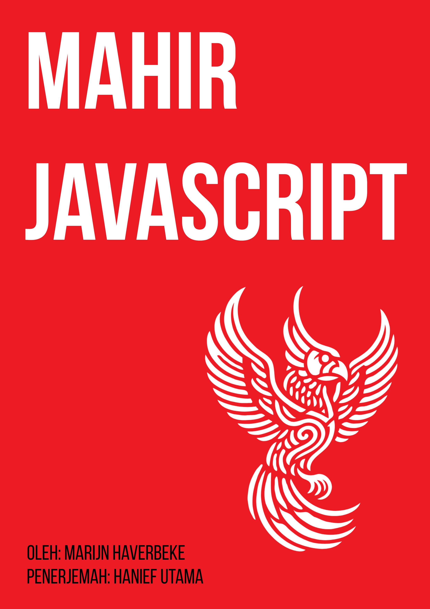

Mahir JavaScriptEdisi pertama (2025)
Ini adalah buku mengenai JavaScript, pemrograman, dan keajaiban digital. Anda bisa membacanya secara daring di sini.
Ditulis oleh Marijn Haverbeke. Diterjemahkan oleh Hanief Utama.
Berlisensi Creative Commons attribution-noncommercial license. Seluruh kode dalam buku berlisensi MIT license.
Ilustrasi oleh beberapa seniman: sampul oleh Hanief Utama. Ilustrasi bab oleh Madalina Tantareanu. Ilustrasi piksel di bab 7 dan 16 oleh Antonio Perdomo Pastor. Diagram ekspresi reguler di bab 9 dibuat menggunakan regexper.com oleh Jeff Avallone. Konsep permainan di bab 16 oleh Thomas Palef.
Daftar Isi
- Pendahuluan
-
(Bagian 1: Bahasa)
Nilai, tipe, dan operator (*dalam antrian) - Struktur Program (*dalam antrian)
- Fungsi (*dalam antrian)
- Struktur Data: Objek dan Array (*dalam antrian)
- Fungsi orde tinggi (*dalam antrian)
- Kehidupan rahasia Objek (*dalam antrian)
- Proyek: Sebuah robot (*dalam antrian)
- Kekutu dan Galat (*dalam antrian)
- Ekspresi Reguler (*dalam antrian)
- Modul (*dalam antrian)
- Pemrograman asinkron (*dalam antrian)
- Proyek: Sebuah Bahasa Pemrograman (*dalam antrian)
-
(Bagian 2: Peramban)
JavaScript dan peramban (*dalam antrian) - DOM (*dalam antrian)
- Menangani Events (*dalam antrian)
- Proyek: Sebuah permainan (*dalam antrian)
- Menggambar di Canvas (*dalam antrian)
- HTTP dan Borang (*dalam antrian)
- Proyek: Sebuah editor seni piksel (*dalam antrian)
-
(Bagian 3: Node)
Node.js (*dalam antrian) - Proyek: Situs berbagi kemampuan (*dalam antrian)
Video
Penerjemahan buku ini dilakukan secara manual oleh saya sendiri. Anda bisa ikut menonton di sini:
Halaman lain
- Sandbox kode dan kunci jawaban latihan
- Pembetulan untuk buku cetakan
- Buku ini dalam bentuk PDF (dan versi mini untuk mobile)
- Buku ini dalam bentuk EPUB
- Buku ini dalam bentuk MOBI (kindle)